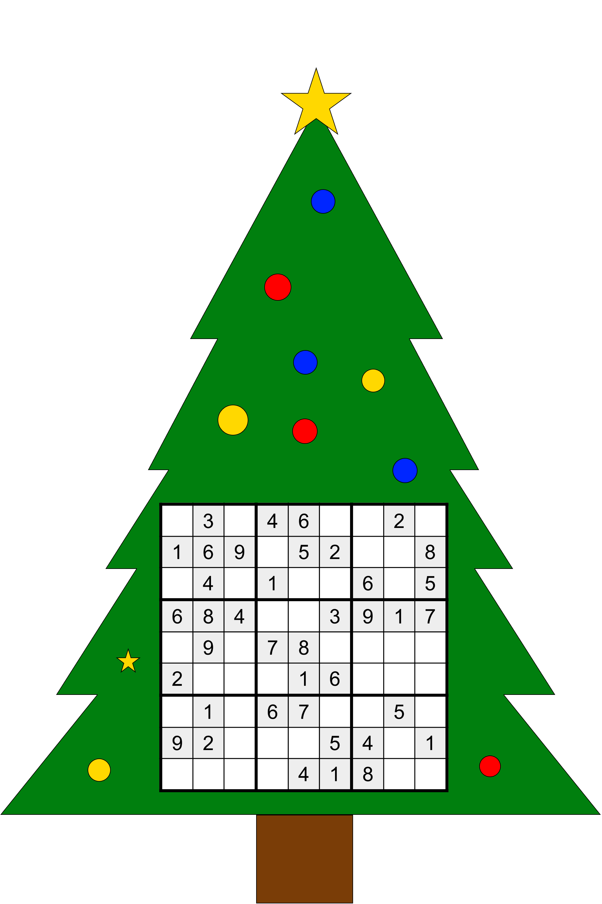

1Jonathan's Quarantaine Kerst0
Welkom op mijn quarantaine kerst pagina! Deze kerst mag ik in quarantaine doorbrengen, dus om de oneindige verveling tegen te gaan ben ik maar wat... uhm... creatieve ideeën tot stand gaan brengen. Hopelijk kan je er een beetje van genieten :).
Verzoekjes
Heb je verzoekjes, mail ze vooral naar kerst@jonathanm.nl, ik heb toch tijd zat!
8Sudokunst
Een van de kerstelfjes heeft mij ingefluisterd dat de getallen in deze sudoku een betekenis hebben. Dit is wat de getallen erover te zeggen hebben:
- "Trek een silvere glinsterlijn tussen ons van boven naar beneden, dan voelen we ons niet zo alleen."
- "Als tweede stap mag je om ons allemaal een mooie gekleurde bal tekenen."
- "Wij vieren graag kerst met zijn allen, maak de rest van ons mooi donkergroen!"
2Where's Baldo
Baldo, de broer van onze goede vriend Waldo, staat te bevriezen in de kou zonder muts. Vindt hem snel om hem een muts aan te bieden!
Klik op de afbeelding om te vergroten